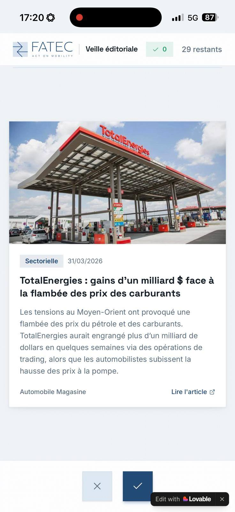

Use cases complets
Des projets. Des choix. Des résultats.
Acquisition, automatisation, contenu et marque : découvrez le problème de départ, les choix réalisés et le travail livré.
 ↗
↗Prospection outbound automatisée pour une entreprise de nettoyage.
Un système pour passer d'une cible locale à une base de comptes qualifiés, puis à une séquence de messages suivie proprement.

↗Un agent de veille automobile pour FATEC.
Collecter, filtrer, faire valider et diffuser les bons signaux chaque semaine, avec Apps Script, IA et un front de tri.
 ↗
↗Enrichissement de données avec Apps Script.
Un workflow pour nettoyer, compléter, scorer et préparer des données commerciales sans dépendre d'un outil lourd.
 ↗
↗Outil de rédaction et publication automatisée SEO.
Un cockpit éditorial pour produire des contenus cohérents, répétables et prêts à publier.
 ↗
↗Création de la marque e-commerce Effet Home.
Positionnement, branding, page de vente, logique publicitaire et premières pistes d'acquisition.